Among as
це надзвичайно популярна багатокористувацька онлайн-гра на виживання та соціальну дедукцію, створена американською студією Innersloth у 2018 році. Завдяки простій механіці, командній взаємодії та елементам психологічної гри вона стала справжнім глобальним хітом.
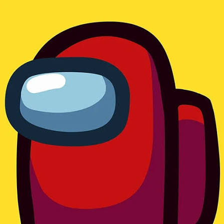
ролі в Among as
Crewmate
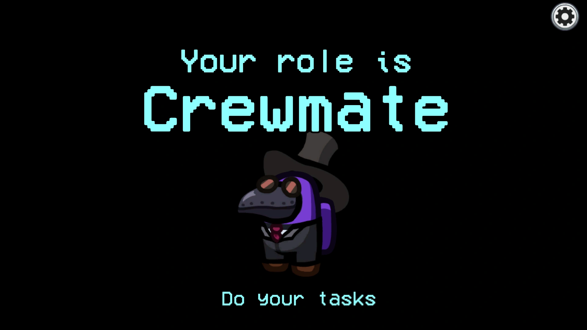
базовий гравець, який виконує таски та намагається вирахувати вбивць на голосуванні.
Engineer
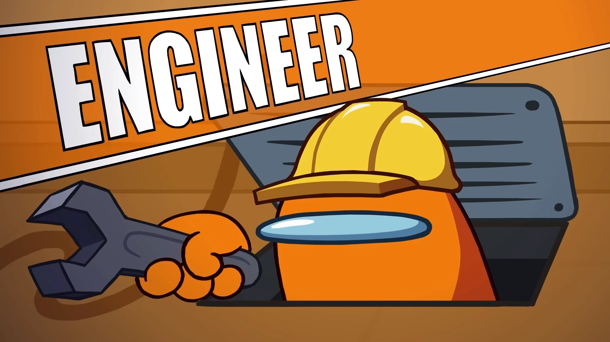
вміє переміщатися через вентиляційні люки (венти), як і зрадники, але з обмеженням за часом.
Scientist
має портативний монітор життєвих показників (віталс) і може в будь-який момент перевірити, чи живі інші гравці.
Noisemaker
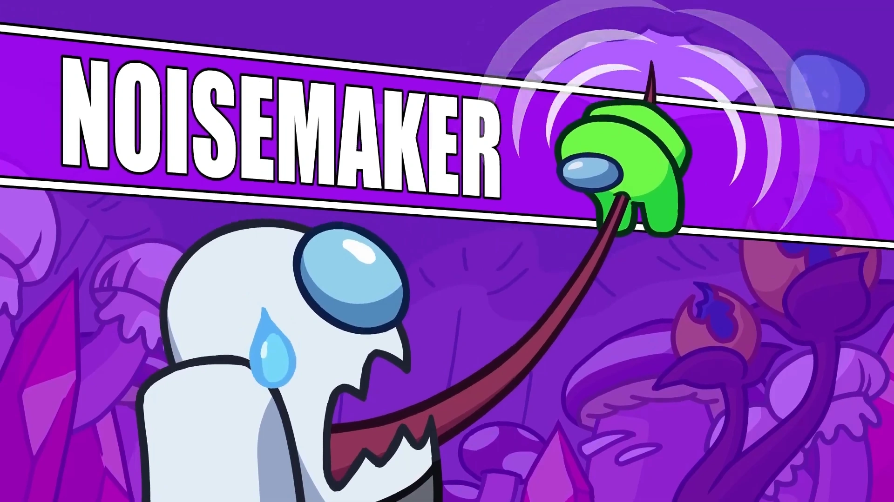
якщо зрадник вбиває цього гравця, його тіло автоматично видає гучний сигнал на екрані, показуючи всім місце злочину
Tracker
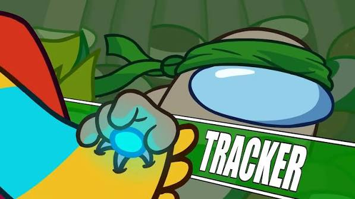
може непомітно почепити маячок на будь-якого гравця та бачити його переміщення на карті в реальному часі
Detective
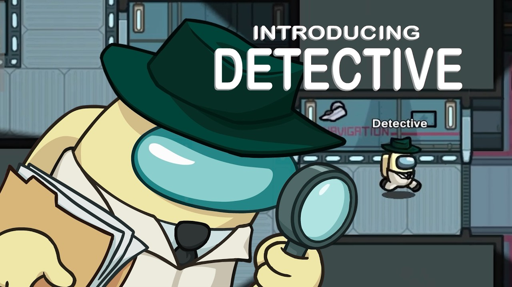
якщо зрадник вбиває цього гравця, його тіло автоматично видає гучний сигнал на екрані, показуючи всім місце злочину
Guardian Angel
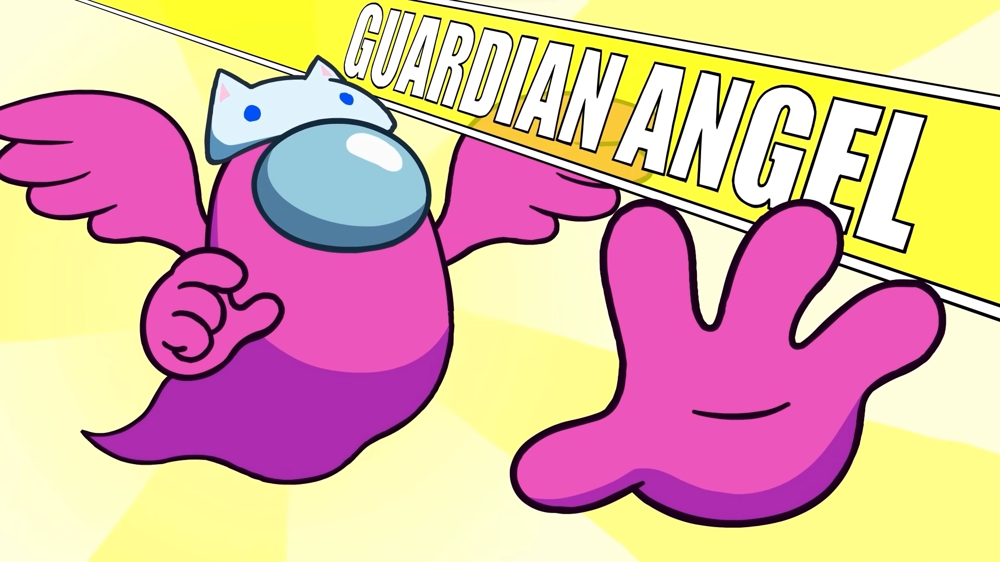
перший мирний гравець, який помер. Ставши привидом, він може накладати тимчасовий захисний щит на живих гравців і рятувати їх безпосередньо в момент удару зрадника.
Impostor
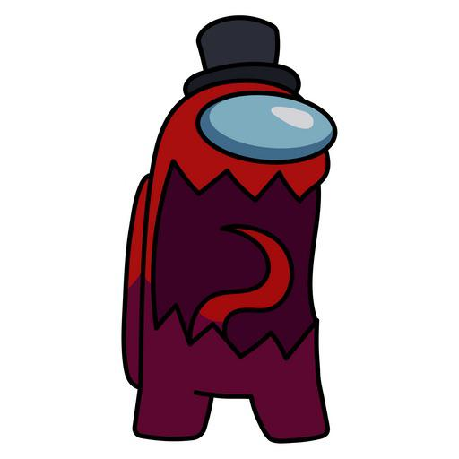
класичний вбивця, який робить саботажі та непомітно знищує команду
Shapeshifter
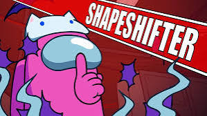
зрадник, який може тимчасово приймати вигляд будь-якого іншого живого члена екіпажу, щоб підставити його.
Phantom
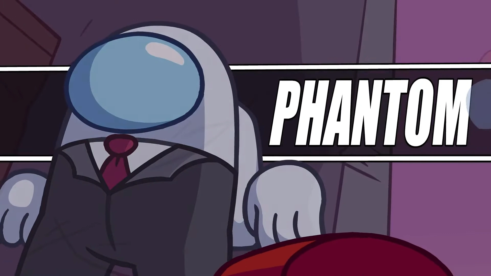
вміє тимчасово ставати повністю невидимим, щоб влаштовувати засідки чи тікати після вбивства (під час невидимості атакувати не може)
Viper
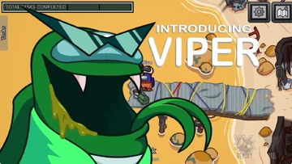
нещодавно додана роль, чия здатність замінює звичайне вбивство на «кислотну атаку». Тіло жертви поступово розчиняється. Коли воно зникає повністю, його більше не можна знайти та репортувати